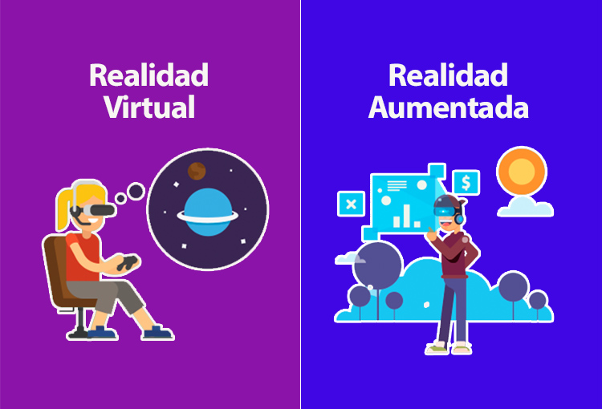

Las bases de datos educativas son una herramienta indispensable en el sector académico. No solo organizan la información básica (como listas de estudiantes y horarios), sino que también facilitan la personalización del aprendizaje y el seguimiento del progreso individual. Además, permiten a las instituciones tomar decisiones fundamentadas basadas en datos históricos y actuales.
Por ejemplo, las bases de datos pueden identificar áreas donde los estudiantes tienen dificultades recurrentes, permitiendo a los docentes implementar estrategias específicas de enseñanza. También son fundamentales para almacenar y analizar datos relacionados con actividades extracurriculares, desempeño de los profesores, e incluso estadísticas demográficas.
Tendencias Actuales
Analítica de Aprendizaje (Learning Analytics)
- Las instituciones están utilizando bases de datos junto con algoritmos de análisis predictivo para anticipar el desempeño de los estudiantes y proponer estrategias de intervención temprana.
- Ejemplo real: Universidades como Stanford están usando analítica avanzada para analizar millones de datos y personalizar el contenido educativo para cada estudiante.
Plataformas de E-learning y Big Data
- Las plataformas de aprendizaje como Udemy y Coursera almacenan y procesan datos sobre las preferencias de aprendizaje de los usuarios. Esto incluye qué cursos toman, cuánto tiempo dedican a cada actividad y su rendimiento en las evaluaciones.
- Estas bases de datos son clave para proporcionar recomendaciones automatizadas y crear caminos de aprendizaje personalizados.
Bibliotecas Digitales Inteligentes
- Con el uso de bases de datos avanzadas, las bibliotecas digitales ahora incluyen funciones de búsqueda semántica, que permiten encontrar información relevante incluso si el usuario no utiliza términos exactos.
- Además, bases de datos como Scopus y JSTOR gestionan grandes cantidades de recursos académicos con clasificación automática y filtros inteligentes.
Proyecciones
Aprendizaje Gamificado
Las bases de datos serán fundamentales para integrar sistemas de gamificación en plataformas educativas, rastreando el progreso de los estudiantes a través de insignias, logros y niveles.
Realidad Aumentada (RA) y Virtual (RV)
La RA y RV requieren bases de datos complejas para almacenar objetos virtuales, entornos interactivos y metadatos educativos. Esto permitirá experiencias inmersivas más accesibles en las aulas.
Conexión con Redes Sociales Educativas
Las bases de datos integradas con plataformas como LinkedIn Learning podrían ayudar a mapear trayectorias profesionales basadas en el historial de aprendizaje.